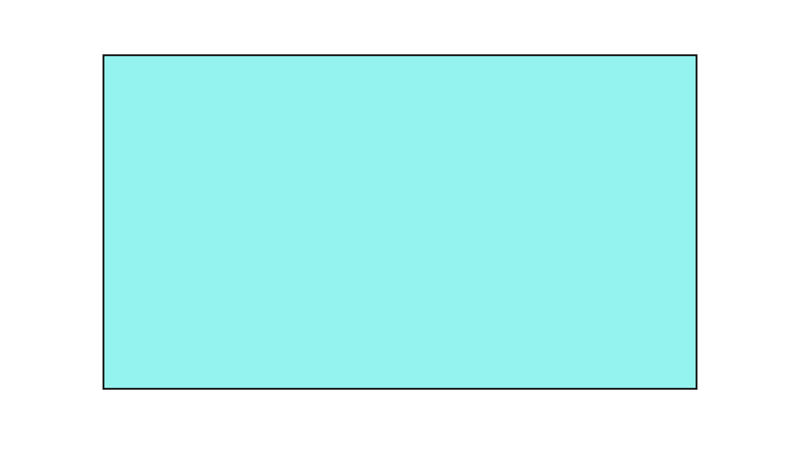

Figury
Figury płaskie
Figury przestrzenne
Menu

Prostokąt
Prostokąt – czworokąt, który ma wszystkie wewnętrzne kąty proste (stąd również jego nazwa). Prostokąt jest szczególnym przypadkiem trapezu prostokątnego oraz równoległoboku.
Wzory
Pole
P = a * b
Obwód
L = 2a + 2b
Przekątna
d² = a² + b²